| Asignatura | Big Data (TI3025) |
| Evaluación | Evaluación Sumativa 02 (25%) · Unidad de Aprendizaje N°2 |
| Criterios evaluados | 2.1.1 · 2.1.2 · 2.1.3 · 2.1.4 |
| Docente | Paulo Simunovic Oyarzún |
| Estudiante | Ignacio Ulloa (trabajo individual) |
| Fecha | 19 de octubre de 2026 |
| Stack (Free Tier) | Google Colab · Apache Spark 3.5 (PySpark) · Google Drive (Data Lake) · Google BigQuery Sandbox + BigQuery ML |
Se diseñó e implementó un pipeline de Big Data completo en la nube, usando solo niveles gratuitos de Google (Colab, Drive y BigQuery Sandbox). El pipeline ingiere los registros oficiales de viajes de taxi amarillo de Nueva York del primer trimestre de 2021 (4.666.625 viajes, 430 MB sin comprimir). Los organiza en un Data Lake por zonas (raw → bronze → silver → gold) en formato Parquet particionado, los limpia y enriquece con Apache Spark, los carga en un Data Warehouse particionado y clusterizado en BigQuery, y sobre ellos hace un análisis descriptivo distribuido y entrena un modelo predictivo.
El caso de negocio es estimar el tiempo de viaje (ETA) al momento de pedir el taxi. Se entrenó un modelo Gradient-Boosted Trees con pyspark.ml, con hiperparámetros elegidos por validación cruzada de 3 particiones. Se evaluó sobre todo marzo (1,85 M de viajes que el modelo nunca vio): R² = 0,812, RMSE = 4,16 min y MAE = 2,47 min. El 88,7% de los viajes quedó dentro de ±5 minutos del valor real, y el error es un 57% menor que el de la línea base.
Una plataforma de movilidad necesita mostrar al pasajero, antes de iniciar el viaje, cuánto se demorará. Un ETA poco preciso deteriora la experiencia y la asignación de conductores. El objetivo es predecir la duración del viaje (en minutos) usando solo información disponible al momento de la solicitud: distancia estimada, zonas de origen y destino, hora, día de la semana y tipo de tarifa. De forma complementaria, se busca entender los patrones de demanda (cuándo y dónde se concentran los viajes) para apoyar decisiones de operación.
| Atributo | Detalle |
|---|---|
| Fuente | NYC Taxi & Limousine Commission (TLC), Yellow Taxi Trip Records, datos abiertos oficiales. Espejo público: github.com/DataTalksClub/nyc-tlc-data (releases). |
| Periodo | Enero, febrero y marzo de 2021 (3 archivos CSV.gz) + tabla de 265 zonas de taxi |
| Volumen | 4.666.625 registros · 18 columnas · 85,3 MB comprimidos · 429,6 MB sin comprimir |
| Variables clave | Fechas y horas de subida y bajada, distancia, zonas de origen y destino, pasajeros, tipo de tarifa, medio de pago, tarifa, propina, peajes y total |
| Justificación | Volumen representativo (millones de filas) que obliga a usar procesamiento distribuido; datos reales y sucios (nulos, valores imposibles), lo que permite aplicar reglas de calidad; descarga directa y sin credenciales, lo que da un pipeline 100% reproducible. |
El pipeline se organiza en cuatro capas desacopladas. Cada una lee la salida persistida de la anterior, así que cualquier capa puede volver a ejecutarse sin afectar a las demás.
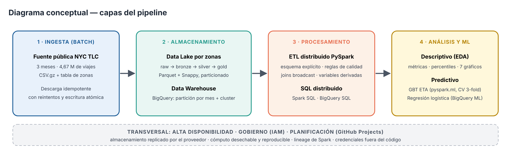
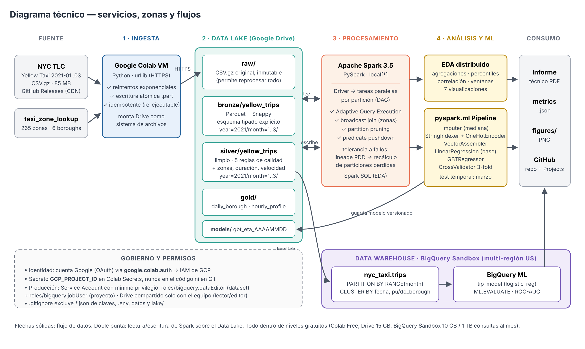
| Capa | Tecnología | Por qué se eligió |
|---|---|---|
| Ingesta | Google Colab (VM en GCP) + urllib | Gratis, sin instalación. La descarga corre dentro de la red de Google (ancho de banda alto) y el código es el mismo que se programaría en Cloud Functions o Composer. |
| Data Lake | Google Drive montado en Colab | 15 GB gratis, almacenamiento de objetos replicado por Google y accesible como sistema de archivos desde Spark. Es el equivalente gratuito de Cloud Storage/S3 en este Free Tier: GCS exige una cuenta de facturación. |
| Formato | Apache Parquet + Snappy | Columnar (lee solo las columnas que pide la consulta), divisible (permite paralelizar la lectura), con estadísticas por bloque (predicate pushdown) y esquema embebido. |
| Procesamiento | Apache Spark 3.5 (PySpark) | Motor distribuido estándar de la industria. El mismo código corre en Colab (local[*]), Dataproc, Databricks o EMR cambiando solo el master. Incluye SQL distribuido y MLlib. |
| Data Warehouse | BigQuery Sandbox | Serverless y gratis sin tarjeta (10 GB de almacenamiento y 1 TB de consultas al mes). Permite particionar, clusterizar y hacer ML en SQL (BigQuery ML). |
| ML | pyspark.ml + BigQuery ML | Entrena sobre millones de filas sin pasar los datos a pandas; los Pipelines aseguran que el preprocesamiento sea idéntico en entrenamiento y en producción. |
| Gestión | GitHub + GitHub Projects | Control de versiones, tablero Kanban integrado con issues y trazabilidad del trabajo. |
| Mecanismo | Cómo se implementa en este proyecto | Qué falla resiste / cómo escala |
|---|---|---|
| HAAlmacenamiento redundante | Data Lake en Google Drive y Data Warehouse en BigQuery (dataset en multi-región US). Google replica los datos en varias zonas. | Pérdida de un disco, un servidor o una zona completa. Los datos sobreviven aunque la VM de Colab se reinicie (el cómputo es efímero, el almacenamiento es persistente). |
| HASeparación cómputo / almacenamiento | Toda la información vive en el lake; la VM de Colab no guarda estado. Si se cae, se abre otra y se vuelve a ejecutar. | Caída o expiración de la VM (habitual en Colab Free). Recuperación = volver a ejecutar el notebook: tiempo de recuperación de minutos y ninguna pérdida de datos. |
| FTIngesta idempotente y atómica | Reintentos con espera exponencial (1, 2, 4 s). Se descarga a un archivo .part y se renombra al terminar; si el archivo ya existe, no se descarga de nuevo. | Cortes de red transitorios y re-ejecuciones parciales, sin archivos corruptos ni duplicados. |
| FTZona RAW inmutable | Los CSV originales nunca se modifican, y bronze, silver y gold se pueden regenerar a partir de ellos. | Errores lógicos en el ETL: se corrige el código y se reprocesa desde RAW (replay). |
| FTLineage de Spark | Cada DataFrame conoce su DAG de transformaciones; las tareas fallidas se reintentan (spark.task.maxFailures). | Pérdida de un executor o partición: Spark recalcula solo las particiones perdidas. |
| FTEscrituras con sobreescritura dinámica | partitionOverwriteMode=dynamic: re-procesar un mes sobreescribe solo esa partición. | Reprocesos parciales sin afectar los meses ya correctos. |
| ESCEscalabilidad horizontal | Datos particionados por year/month en Parquet divisible. Spark asigna una tarea por bloque/partición, y AQE ajusta el paralelismo en la ejecución. | Más datos implica agregar workers: el mismo código pasa de 2 vCPU en Colab a un clúster Dataproc de N nodos con --master yarn. BigQuery escala automáticamente (serverless). |
| ESCOptimización de consultas | Partition pruning (solo se lee el mes pedido), predicate pushdown, broadcast join de la tabla de zonas, y en BigQuery partición por mes y clustering por fecha y borough. | Costo y latencia crecen con los datos consultados, no con el total almacenado. |
| HAVersionado de modelo y código | Modelo guardado en models/gbt_eta_AAAAMMDD; código y configuración en GitHub. | Un modelo nuevo defectuoso se revierte cargando la versión anterior (rollback). |
console.cloud.google.com con la cuenta Google, sin tarjeta, y se habilita la API de BigQuery.GCP_PROJECT_ID con acceso solo para el notebook.notebooks/pipeline_bigdata_nyc_taxi.ipynb: se abre desde GitHub en Colab y se ejecuta con Ejecutar todo. Monta Drive como Data Lake, crea la sesión Spark e instala dependencias fijadas en requirements.txt.spark = (SparkSession.builder.appName("nyc-taxi-bigdata-pipeline").master("local[*]")
.config("spark.driver.memory", "8g")
.config("spark.sql.shuffle.partitions", "16") # ajustado al tamaño del clúster
.config("spark.sql.adaptive.enabled", "true") # AQE: re-optimiza en ejecución
.config("spark.sql.parquet.compression.codec", "snappy")
.config("spark.sql.sources.partitionOverwriteMode", "dynamic")
.getOrCreate())
| Zona | Contenido | Formato / partición | Filas | Tamaño |
|---|---|---|---|---|
| raw/ | Archivos originales, inmutables | CSV.gz | 4.666.625 | 85,3 MB |
| bronze/ | Esquema tipado explícito + metadatos de ingesta (ingest_ts, source_file) | Parquet+Snappy · year=/month= | 4.666.625 | 94,7 MB |
| silver/ | Datos limpios + zonas + 9 variables derivadas | Parquet+Snappy · year=/month= | 4.469.822 | 148,6 MB |
| gold/ | Agregados de negocio: daily_borough, hourly_profile | Parquet+Snappy | 621 | < 1 MB |
bronze = (spark.read.csv(str(RAW / "yellow_tripdata_*.csv.gz"), header=True, schema=schema) # sin inferSchema: 1 sola lectura
.withColumn("year", F.year("tpep_pickup_datetime"))
.withColumn("month", F.month("tpep_pickup_datetime")))
(bronze.repartition("year", "month")
.write.mode("overwrite").partitionBy("year", "month").parquet(str(BRONZE / "yellow_trips")))
Optimización medida. La misma consulta (tarifa promedio por zona de origen en marzo) tardó 2,07 s sobre el CSV.gz y 0,37 s sobre el Parquet particionado: 5,6 veces más rápida. Parquet ocupa un 78% menos que el CSV sin comprimir (95 MB contra 430 MB). Es algo más grande que el gzip, que comprime más pero no se puede dividir, y por eso obliga a leer cada archivo con una sola tarea. La ganancia viene de: (1) partition pruning, porque el filtro month = 3 descarta los directorios de enero y febrero sin abrirlos; (2) lectura columnar, porque solo se leen 2 de 22 columnas; y (3) lectura paralela de los bloques. El plan físico de Spark (explain()) confirma PartitionFilters y PushedFilters.
| Regla | Condición válida | Filas que la incumplen |
|---|---|---|
| Fecha dentro del periodo | 2021-01-01 ≤ fecha de subida ≤ 2021-03-31 | 67 |
| Distancia válida | 0,1 ≤ millas ≤ 100 | 74.946 |
| Tarifa válida | 2,5 ≤ USD ≤ 500 (tarifa mínima de NYC = 2,5) | 25.506 |
| Duración válida | 1 ≤ minutos ≤ 180 | 76.409 |
| Zona conocida | Origen/destino ≠ 264, 265 ("Unknown") | 93.857 |
| Velocidad física | velocidad media < 80 mph | (filtro final) |
Resultado: 4.469.822 viajes válidos (se descartó un 4,22%). Las reglas se cuentan por separado (una fila puede incumplir varias). Variables derivadas: trip_duration_min, pickup_hour, pickup_dow, is_weekend, avg_speed_mph, tip_pct, is_airport, same_borough, más borough, zona y service zone de origen y destino (obtenidas con un broadcast join).
La zona SILVER se carga con load jobs de Parquet (gratuitos) en la tabla nyc_taxi.trips, particionada por rango entero sobre month y clusterizada por pickup_date, pu_borough, do_borough. Se eligió partición por rango y no por fecha porque en el Sandbox las particiones por fecha expiran a los 60 días de su fecha: con datos de 2021 se borrarían al cargarse. Con esta configuración, una consulta sobre marzo solo factura los bytes de esa partición, y el clustering por fecha permite podar bloques dentro de ella, lo que mantiene el uso muy por debajo de 1 TB al mes.
job_cfg = bigquery.LoadJobConfig(
source_format=bigquery.SourceFormat.PARQUET,
range_partitioning=bigquery.RangePartitioning(field="month", range_=bigquery.PartitionRange(start=1, end=13, interval=1)),
clustering_fields=["pickup_date", "pu_borough", "do_borough"])
bq.load_table_from_file(fh, f"{DS}.trips", job_config=job_cfg).result()
| Aspecto | Configuración |
|---|---|
| Identidad y autenticación | google.colab.auth.authenticate_user(): OAuth 2.0 con la cuenta Google, que obtiene credenciales temporales de IAM y no deja claves en el código. |
| Secretos | GCP_PROJECT_ID en Colab Secrets (userdata.get) o como variable de entorno. config.yaml no tiene secretos. |
| Mínimo privilegio (producción) | Service Account sa-pipeline@<proyecto>.iam.gserviceaccount.com con roles/bigquery.dataEditor solo sobre el dataset nyc_taxi y roles/bigquery.jobUser sobre el proyecto (puede ejecutar consultas y cargas, pero no administrar el proyecto). Analistas: roles/bigquery.dataViewer. |
| Data Lake | Carpeta bigdata_lake de Drive compartida solo con el equipo (editor) y con el docente (lector). |
| Repositorio | .gitignore excluye *.json de claves, .env, *.pem, datos y lake/: ningún dato ni credencial se versiona. |
Todas las métricas se calcularon con Spark SQL sobre los 4,47 M de filas (percentiles con PERCENTILE_APPROX, correlación, funciones de ventana). A pandas solo se pasaron los resultados ya agregados para graficar.
SELECT COUNT(*) AS viajes, ROUND(AVG(trip_distance),2) AS dist_media_mi,
ROUND(PERCENTILE_APPROX(trip_duration_min,0.5),2) AS dur_mediana_min,
ROUND(STDDEV(trip_duration_min),2) AS dur_desv_std, ROUND(SUM(total_amount)/1e6,2) AS ingresos_musd,
ROUND(CORR(trip_distance, trip_duration_min),3) AS corr_dist_dur
FROM trips
| Métrica | Valor | Métrica | Valor |
|---|---|---|---|
| Viajes válidos | 4.469.822 | Ingresos totales | USD 77,81 M |
| Distancia media / mediana | 2,82 / 1,71 mi | Tarifa media | USD 11,85 |
| Duración media / mediana | 12,08 / 9,57 min | Velocidad media | 12,8 mph |
| Desviación estándar de duración | 9,37 min | Correlación distancia–duración | 0,809 |
| Mes | Viajes | Ingresos (M USD) | Dur. media | Propina |
|---|---|---|---|---|
| Enero | 1.310.738 | 22,66 | 11,53 | 19,70% |
| Febrero | 1.311.226 | 22,78 | 12,35 | 19,71% |
| Marzo | 1.847.858 | 32,37 | 12,29 | 19,80% |
| Borough | % viajes | Dist. media | Tarifa media |
|---|---|---|---|
| Manhattan | 92,59% | 2,28 | 10,28 |
| Queens | 4,63% | 11,01 | 33,90 |
| Brooklyn | 1,85% | 6,74 | 26,60 |
| Bronx | 0,91% | 7,26 | 27,60 |
| Staten Island | 0,02% | 27,03 | 75,25 |
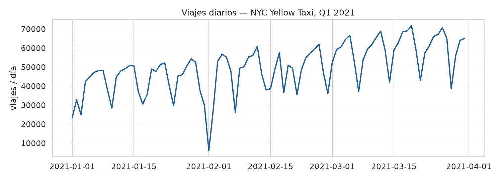
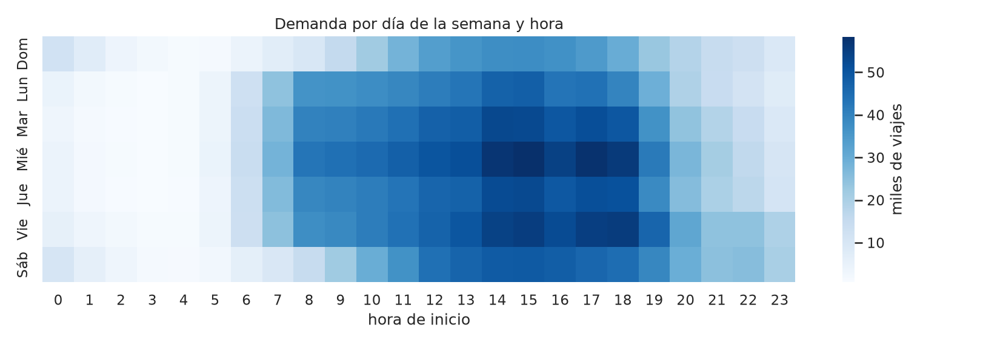
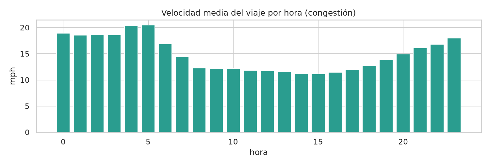
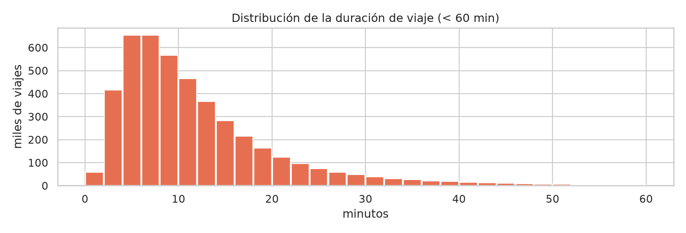
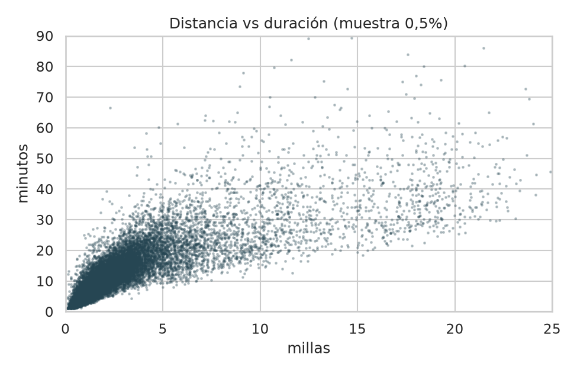
| Elemento | Decisión |
|---|---|
| Tipo de problema | Regresión: trip_duration_min |
| Variables (12) | Numéricas: distancia, pasajeros, hora, día de la semana, fin de semana, aeropuerto, mismo borough. Categóricas: tipo de tarifa, borough de origen y destino, zona de origen y destino (≈260 niveles cada una). |
| Validación temporal | Entrenamiento con enero–febrero (muestra aleatoria del 25%, 655.743 filas, por el límite de RAM del Free Tier) y prueba con marzo completo (1.847.858 filas), nunca visto por el modelo. Esto imita producción, donde se predice el futuro con datos del pasado, y evita la fuga de información de un split aleatorio. |
| Ajuste de hiperparámetros | CrossValidator 3-fold sobre una grilla de maxDepth ∈ {4, 6} × maxIter ∈ {20, 40} (12 entrenamientos, en paralelo) |
| Métricas | RMSE (penaliza errores grandes), MAE (error típico en minutos), R² (varianza explicada), % de viajes con error ≤ 5 min |
pyspark.ml)imputer = Imputer(inputCols=["passenger_count_d"], outputCols=["passenger_imp"], strategy="median") # nulos indexers = [StringIndexer(inputCol=c, outputCol=c+"_idx", handleInvalid="keep") for c in cats] # texto→índice ohe = OneHotEncoder(inputCols=[c+"_idx" for c in cats], outputCols=[c+"_ohe" for c in cats], handleInvalid="keep") assembler = VectorAssembler(inputCols=num + [c+"_ohe" for c in cats], outputCol="features") gbt = GBTRegressor(labelCol="trip_duration_min", maxBins=64, subsamplingRate=0.8, seed=42) grid = ParamGridBuilder().addGrid(gbt.maxDepth, [4, 6]).addGrid(gbt.maxIter, [20, 40]).build() cv = CrossValidator(estimator=gbt, estimatorParamMaps=grid, evaluator=RegressionEvaluator(metricName="rmse"), numFolds=3, parallelism=2, seed=42) model = Pipeline(stages=[imputer, *indexers, ohe, assembler, gbt_best]).fit(train)
handleInvalid="keep" hace que el modelo tolere zonas o tarifas que no aparecieron en el entrenamiento (las agrupa en una categoría "desconocida"), lo que lo vuelve robusto en producción. Como todo el preprocesamiento está dentro del Pipeline, se guarda junto al modelo y se aplica igual al predecir.
| Validación cruzada 3-fold | RMSE CV |
|---|---|
| maxDepth 4 · maxIter 20 | 4,400 |
| maxDepth 4 · maxIter 40 | 4,347 |
| maxDepth 6 · maxIter 20 | 4,369 |
| maxDepth 6 · maxIter 40 (elegido) | 4,332 |
| Modelo (test = marzo) | RMSE | MAE | R² |
|---|---|---|---|
| Línea base (media) | 9,588 | 6,553 | 0,000 |
| Regresión lineal | 4,998 | 3,238 | 0,728 |
| GBT (CV) | 4,157 | 2,465 | 0,812 |
| GBT sobre train | 4,102 | 2,486 | 0,802 |
Validación formal: el GBT reduce el RMSE un 56,6% frente a la línea base y un 16,8% frente a la regresión lineal. Las métricas de entrenamiento (RMSE 4,10) y de prueba (4,16) son casi iguales, así que no hay sobreajuste y el modelo generaliza a un mes que no vio, aunque marzo tuvo un 41% más de demanda. El RMSE de prueba también es coherente con el de la validación cruzada (4,33).
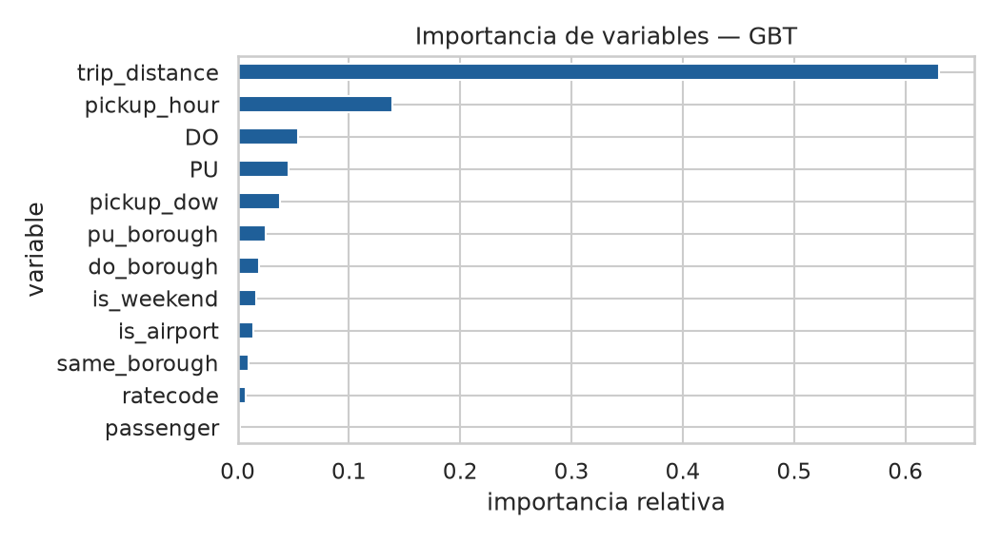
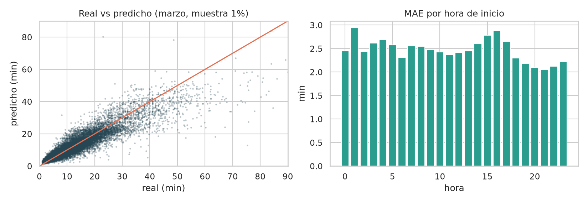
Para usar el Data Warehouse como motor de ML, se entrena directamente en SQL una regresión logística que predice si un pasajero con tarjeta dejará una propina ≥ 20%. Se entrena con enero y se evalúa con febrero (split temporal personalizado) y con clases balanceadas. ML.EVALUATE entrega accuracy, precision, recall, F1 y ROC-AUC (ver la salida en el notebook ejecutado en Colab).
CREATE OR REPLACE MODEL `nyc_taxi.tip_model`
OPTIONS(model_type='logistic_reg', input_label_cols=['good_tip'],
data_split_method='CUSTOM', data_split_col='is_eval', auto_class_weights=TRUE) AS
SELECT IF(tip_pct >= 0.2, 1, 0) AS good_tip, trip_distance, pickup_hour, pickup_dow, is_airport,
pu_borough, do_borough, CAST(passenger_count AS STRING) AS passengers, month = 2 AS is_eval
FROM `nyc_taxi.trips` WHERE payment_type = 1 AND month IN (1, 2);
SELECT * FROM ML.EVALUATE(MODEL `nyc_taxi.tip_model`);
El trabajo es individual. Para planificar y controlar el avance como en un equipo, las responsabilidades se separaron en cuatro roles, cada uno con sus entregables y tareas en el tablero:
| Rol | Responsable | Responsabilidades | Tareas |
|---|---|---|---|
| Líder de proyecto | Ignacio Ulloa | Análisis de la pauta, plan, control de hitos, informe y entrega | T01, T13, T14, T16 |
| Arquitecto cloud | Ignacio Ulloa | Stack Free Tier, diagramas, alta disponibilidad, BigQuery, IAM | T02, T08, T11, T15 |
| Ingeniero de datos | Ignacio Ulloa | Ingesta, Data Lake, ETL PySpark, calidad de datos, scripts | T03–T07, T12 |
| Científico de datos | Ignacio Ulloa | EDA distribuido, modelo, validación e interpretación | T09, T10 |
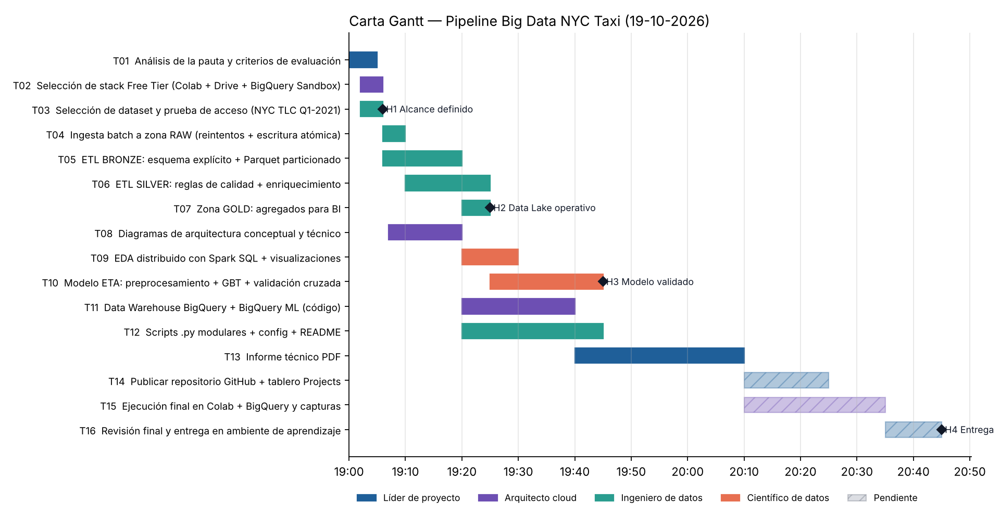
docs/plan.csv.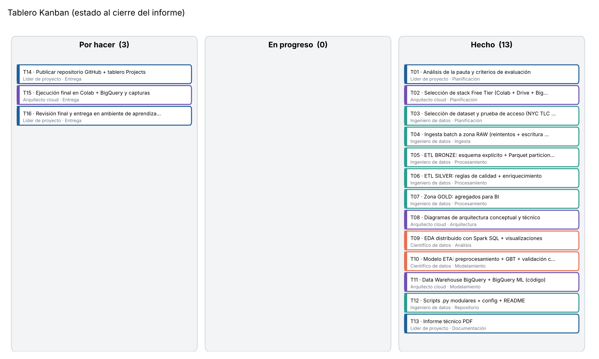
docs/crear_kanban_github.sh crea el mismo tablero en GitHub Projects (un issue por tarea).| Hito | Criterio de logro | Evidencia | Estado |
|---|---|---|---|
| H1 Alcance definido | Stack, dataset y problema elegidos | Secciones 2 y 3.3 | Logrado |
| H2 Data Lake operativo | raw/bronze/silver/gold en Parquet particionado | Sección 4.2 | Logrado |
| H3 Modelo validado | GBT con CV y test temporal; R² > 0,75 | Sección 6.3 (R² = 0,812) | Logrado |
| H4 Entrega | Informe PDF + repositorio publicados | Este documento + enlace en la portada | En curso al cierre del informe |
| # | Incidencia | Impacto | Solución aplicada |
|---|---|---|---|
| I-01 | El CDN oficial de NYC TLC respondió 403 desde el entorno de ejecución | Bloqueaba la ingesta | Se usó el espejo público en GitHub Releases (mismos datos oficiales); la URL queda parametrizada en config.yaml. |
| I-02 | Falló la compilación de la wheel de pyspark con el setuptools del sistema | Sin sesión Spark | Entorno virtual con pip, setuptools y wheel actualizados; versión fijada en requirements.txt. |
| I-03 | VectorAssembler: "Encountered null while assembling a row" | El entrenamiento se detenía | is_airport y same_borough quedaban NULL en zonas sin borough. Se corrigió con coalesce(…, 0) en SILVER, y se usa Imputer para passenger_count. |
| I-04 | Recursos limitados del Free Tier (≈12 GB y 2 vCPU) | Riesgo de quedarse sin memoria con GBT + CV | Entrenamiento sobre una muestra del 25%, CV sobre una sub-muestra y prueba sobre marzo completo; cache() selectivo. |
| I-05 | Lectura de CSV.gz lenta (no se puede dividir: 1 tarea por archivo) | ETL sin paralelismo | Conversión inmediata a Parquet particionado en BRONZE: la consulta es 5,6 veces más rápida. |
| I-07 | En BigQuery Sandbox las tablas y particiones por fecha expiran a los 60 días | Las particiones de 2021 se habrían borrado al cargarse | Partición por rango entero sobre month + clustering por fecha; timestamps en Parquet como TIMESTAMP_MICROS para que BigQuery los cargue sin problemas. |
| I-06 | Datos sucios (distancias 0, tarifas negativas, duraciones imposibles) | Sesgaba el EDA y el modelo | 5 reglas de calidad cuantificadas más un filtro de velocidad física. |
Se construyó un pipeline de Big Data completo en la nube, usando solo niveles gratuitos, que cumple los cuatro criterios de la evaluación. La arquitectura separa cómputo y almacenamiento, se apoya en almacenamiento replicado por el proveedor y en procesos idempotentes, y escala horizontalmente sin cambiar el código. El uso de Parquet particionado aceleró las consultas 5,6 veces. El análisis descriptivo distribuido mostró una fuerte concentración en Manhattan, picos de demanda en las tardes de días laborales y una recuperación de la demanda en marzo (+27% de viajes diarios frente a febrero). El modelo GBT, validado con validación cruzada y con un mes completo nunca visto, predice el ETA con R² = 0,81 y un error típico de 2,5 minutos, sin sobreajuste.
Trabajo futuro: (1) ingesta en streaming con Pub/Sub y Spark Structured Streaming; (2) orquestación diaria con Airflow o Cloud Composer y monitoreo de la deriva del modelo; (3) variables de clima y tráfico; (4) servir el modelo como API (Cloud Run) que consulte el modelo versionado del lake; (5) migrar de Drive a Cloud Storage y de Colab a Dataproc Serverless cuando se disponga de facturación.
bigdata-nyc-taxi-pipeline/ ├── README.md # descripción, arquitectura y cómo ejecutar ├── requirements.txt # dependencias con versión fijada ├── config/config.yaml # parámetros del pipeline (sin secretos) ├── notebooks/ │ ├── pipeline_bigdata_nyc_taxi.ipynb # pipeline completo, ejecutable en Colab │ └── pipeline_source.py # fuente del notebook (celdas # %%) ├── src/ │ ├── common.py # rutas del Data Lake + sesión Spark │ ├── 01_ingesta.py # RAW │ ├── 02_etl.py # BRONZE → SILVER → GOLD │ ├── 03_eda.py # Spark SQL descriptivo │ ├── 04_modelo_ml.py # Pipeline pyspark.ml + CV │ └── 05_bigquery.py # carga al DW + BigQuery ML ├── results/metrics.json · results/figures/*.png └── docs/ (diagramas, plan.csv, Gantt, Kanban, bitácora, informe)
Ejecución: abrir el notebook en Colab (Archivo → Abrir cuaderno → GitHub), registrar GCP_PROJECT_ID en Secretos y elegir Entorno de ejecución → Ejecutar todo (≈ 15 min). Alternativa por scripts: pip install -r requirements.txt y luego python src/01_ingesta.py … python src/05_bigquery.py.
Las métricas de este informe provienen de la ejecución completa del pipeline (Spark 3.5.3, semilla 42). Al volver a ejecutarlo en otra VM pueden variar levemente (en la tercera cifra decimal), porque el muestreo depende de cómo se particionan los datos.